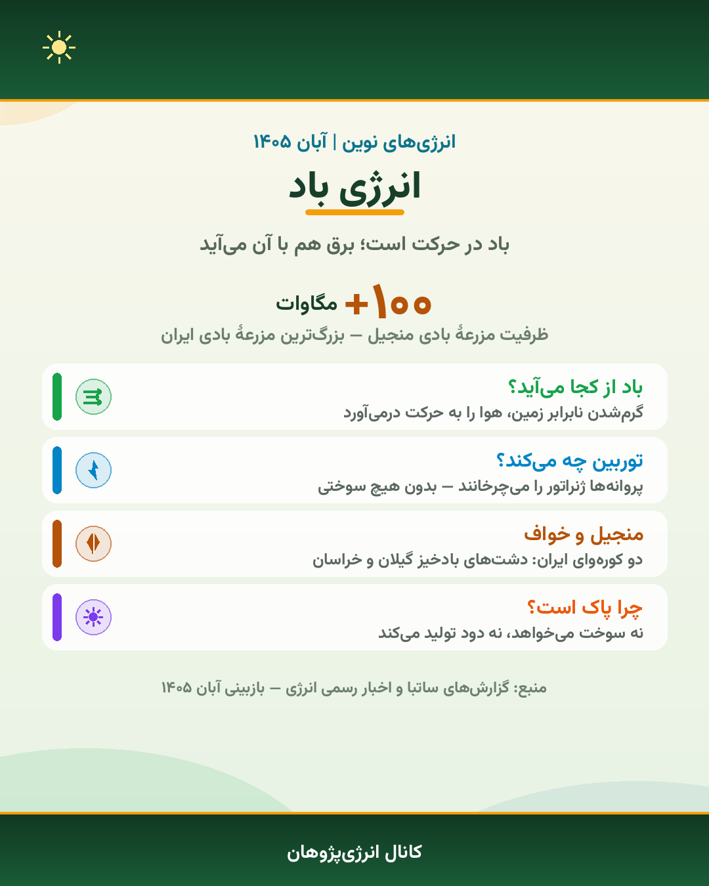

آبان ماهِ پرکاری برای کانال انرژیپژوهان بود؛ از معرفی کانال و پرسشِ سادهٔ «انرژی نوین چیست؟» رسیدیم به پنج پروندهٔ کامل دربارهٔ منابع تجدیدپذیر، گزارش زندهٔ مزرعهٔ بادی و خبر نیروگاه خورشیدی ساوه.
این مجله، آینهٔ همین یک ماه فعالیت است. همهٔ مطالب آن از بایگانی کانال انرژیپژوهان جمع شده تا یکجا، مرتب و قابلچاپ در دسترس اعضای انجمن باشد؛ کسی که پیامها را از دست داده بتواند یک عصر بنشیند و کل مسیر را یکجا بخواند، و کسی که دنبال عدد و آمار درسی است بداند هر جمله از کدام پست آمده است. به همین دلیل در پایان هر بخش، «منبع» همان پست کانال ذکر شده است.
قرار ما از ابتدا روشن بوده است: توضیح بدهیم، اغراق نکنیم. هر عددی که در این شماره میبینید از گزارشهای رسمی — ساتبا و وزارت نیرو — آمده و در آبان ۱۴۰۵ دوباره بازبینی شده است. جایی که عدد نداریم، صادقانه میگوییم «در حال توسعه است»؛ مثل میدان زمینگرمایی سبلان.
خبرنامه
آبان در کانال انرژیپژوهان
کانال اول آبان با دو پیام آغاز شد و در ادامهٔ ماه، پروندهها یکییکی منتشر شدند. این خطِ زمان، خلاصهٔ مسیر است:
۲ آبانمعرفی کانال — اهداف انجمن انرژیپژوهان: خبرهای نوآوری، شناخت نیروگاههای ایران و آموزشهای کوتاه انرژی.
۲ آبان«انرژی نوین چیست؟» — تعریف سادهٔ انرژیهای تجدیدپذیر و تفاوتشان با سوختهای فسیلی.
۳ آبانپروندهٔ ۱ — انرژی خورشیدی؛ نخستین پرونده از مجموعهٔ پنج منبع تجدیدپذیر.
۴ آبانگزارش نیروگاه ساوه — رکورد تازهٔ نیروگاه خورشیدی خودمصرفی ایران.
۴ آبانپروندهٔ ۲ — انرژی باد؛ از منجیل تا خواف.
۵ آبانگزارش زندهٔ توربین بادی — تصاویر مستقیم از مزرعهٔ بادی.
۹ آبانسه پروندهٔ همزمان — زمینگرمایی، آب (برقآبی) و زیستتوده؛ مجموعهٔ پنجتایی کامل شد.
درسنامه
انرژی نوین چیست؟
تا حالا فکر کردهای برق خانهها، مدرسهها و خیابانها از کجا تأمین میشود؟ بخشی از انرژی موردنیاز ما از سوختهایی مثل نفت، گاز و زغالسنگ به دست میآید؛ اما این منابع محدودند و استفاده از آنها آلودگی تولید میکند. به همین دلیل دانشمندان به دنبال راههایی برای تولید انرژی پاکتر و پایدارتر هستند.
انرژیهای نوین به روشها و فناوریهایی گفته میشود که برای تأمین انرژی — بهویژه با استفاده از منابع تجدیدپذیر و فناوریهای جدید — به کار میروند. بسیاری از این روشها آلودگی بسیار کمتری نسبت به سوختهای فسیلی دارند و مهمتر از همه، برخلاف نفت و گاز، تمامشدنی نیستند: خورشید فردا هم میتابد، باد دوباره میوزد و باران، سدها را دوباره پُر میکند.
در کانال، مجموعهای پنجقسمتی برای شناخت این منابع ساخته شد که پروندههای این شمارهٔ مجله همان است:
☀️ خورشیدیپروندهٔ ۱ — صفحهٔ ۳
💨 بادیپروندهٔ ۲ — صفحهٔ ۴
🌡 زمینگرماییپروندهٔ ۳ — صفحهٔ ۴
💧 آبپروندهٔ ۴ — صفحهٔ ۵
🌱 زیستتودهپروندهٔ ۵ — صفحهٔ ۵
پروندهٔ ۱
انرژی خورشیدی ☀️
پنلهای خورشیدی نور خورشید را به برق تبدیل میکنند؛ ساده و بیصدا. از این برق میتوان برای روشنایی خانه، شارژ وسایل و تأمین برق ساختمانها استفاده کرد. پنل هیچ بخش متحرکی ندارد، سوخت نمیخواهد و دود تولید نمیکند؛ برای همین روی پشتبام خانهها و مدرسهها هم جا میشود.
فناوری این پنلها «فتوولتائیک» نام دارد: نور مستقیم به برق تبدیل میشود — بدون دیگ بخار و بدون توربین. همین ویژگی است که پنل بام را به یکی از پروژههای ایدهآل مدرسهها تبدیل کرده است؛ پروژهای که قرار است خودِ ما در پژوهشسرا تجربهاش کنیم.
۱۳۰ مگاواتظرفیت نیروگاه خورشیدی ساوه — بزرگترین نیروگاه خورشیدی خودمصرفی ایران
پوستر پروندهٔ ۱ — منتشرشده در کانال، ۳ آبان ۱۴۰۵
گزارش — بزرگترین نیروگاه خورشیدی خودمصرفی ایران در ساوه
روز یکم خرداد ۱۴۰۵، نیروگاه ۱۳۰ مگاواتی خورشیدی شرکت متانول کاوه در ساوه (استان مرکزی) وارد مدار شد. با این افتتاح، رکورد «بزرگترین نیروگاه خورشیدی خودمصرفی کشور» از فولاد مبارکه (۱۲۰ مگاوات، تیر ۱۴۰۴) گرفته شد؛ یعنی در کمتر از یک سال، رکورد با اختلاف ۱۰ مگاوات جابهجا شد.
«خودمصرفی» یعنی برقِ نیروگاه مستقیم مصرفِ خودِ کارخانه است؛ برقی که در محل تولید میشود، هزینهٔ انتقال ندارد و وابستگی به شبکه را کم میکند. برای بچههای انرژیپژوهان این گزارش یک پیام روشن دارد: انرژی خورشیدی دیگر پروژهٔ آینده نیست؛ همین حالا در صنعت ایران کار میکند.
پوستر گزارش نیروگاه ساوه — ۴ آبان ۱۴۰۵
🔗 منبع: گزارشهای رسمی افتتاح و اعلام ساتبا — بازبینی آبان ۱۴۰۵
پروندهٔ ۲
انرژی بادی 💨
باد یعنی هوای در حرکت. وقتی خورشید زمین را نابرابر گرم میکند، هوا جابهجا میشود و باد به راه میافتد؛ پس انرژی باد، در واقع همان انرژی خورشید است که پشتِ پنجرهٔ دیگری به ما میرسد. توربین بادی همین حرکت را با پروانههایش میگیرد، ژنراتور را میچرخاند و برق تولید میکند — بدون هیچ سوخت و دودی.
ایران دو کورهوای معروف دارد: دشت منجیل در گیلان و منطقهٔ خواف در خراسان رضوی. مزرعهٔ بادی منجیل سالهاست بخشی از برق شبکه را با نسیم دشت تأمین میکند و در روزهای بادخیز، پروانههایش از راه دور دیده میشوند. برای بچههای انرژیپژوهان، دیدن این توربینها از نزدیک — مثل گزارش زندهٔ ۵ آبان — بهترین درسِ عملی است.
بیش از ۱۰۰ مگاواتظرفیت مزرعهٔ بادی منجیل — بزرگترین مزرعهٔ بادی کشور

پوستر پروندهٔ ۲ — منتشرشده در کانال، ۴ آبان ۱۴۰۵
🔗 منبع: گزارشهای ساتبا و اخبار رسمی انرژی — بازبینی آبان ۱۴۰۵
پروندهٔ ۳
انرژی زمینگرمایی 🌡
زمین فقط زیر پای ما نیست؛ در دلش یک کورهٔ بزرگ هم هست. سنگهای داغ درون زمین آب را به بخار تبدیل میکنند و همین بخار، توربین و ژنراتور را میچرخاند و برق تولید میکند — بدون هیچ سوخت و دودی. و برخلاف خورشید و باد، زمین همیشه گرم است؛ نیروگاه زمینگرمایی شب و روز نمیشناسد و آرام و پیوسته برق میدهد. همین «تداوم» است که زمینگرمایی را به مکملِ ارزشمند خورشید و باد تبدیل میکند.
ایران هم روی این گنج پا گذاشته است: نخستین میدان زمینگرمایی کشور در دامنهٔ سبلان، نزدیک مشکینشهر استان اردبیل، در حال توسعه است. نمونهٔ جهانیِ ماندگارش ایسلند است؛ جایی که حدود ۹۰ درصد خانهها با گرمای زمین گرم میشوند.
حدود ۹۰٪ خانههاسهم گرمای زمین در گرمایش خانههای ایسلند
پوستر پروندهٔ ۳ — منتشرشده در کانال، ۹ آبان ۱۴۰۵
🔗 منبع: گزارشهای ساتبا و منابع رسمی انرژی — بازبینی آبان ۱۴۰۵
پروندهٔ ۴
انرژی آب (برقآبی) 💧
آبِ ایستاده پشت سد فقط منظر نیست؛ انرژیِ ذخیرهشده است. وقتی دریچه باز میشود، آب با فشار به پایین میریزد و توربین را میچرخاند؛ ژنراتور هم همان حرکت را به برق تبدیل میکند. سد مثل یک باتری غولآساست: باران و برف دوباره پُرش میکنند و این چرخه هیچوقت تمام نمیشود.
برقآبی یک مزیت مهم هم دارد: چند ثانیه بعد از فرمان، توربین میچرخد؛ برای همین در ساعات اوج مصرف کنار سایر نیروگاهها میآید و شبکه را تعادل نگه میدارد. نمونهٔ جهانیاش نروژ است که حدود ۹۰ درصد برقش را از آب میگیرد؛ ایران هم با کارون ۳ در مسجدسلیمان بزرگترین نیروگاه برقآبی کشور را دارد.
۲٬۲۸۰ مگاواتنیروگاه برقآبی کارون ۳ — بزرگترین نیروگاه برقآبی ایران
پوستر پروندهٔ ۴ — منتشرشده در کانال، ۹ آبان ۱۴۰۵
🔗 منبع: گزارشهای ساتبا و وزارت نیرو — بازبینی آبان ۱۴۰۵
پروندهٔ ۵
انرژی زیستتوده 🌱
زیستتوده یعنی هر مادهٔ گیاهی و جانوری که از طبیعت به دست ما میرسد و هنوز انرژی خورشید را در دلش دارد: کاه و کلشِ مزرعه، برگ و علفِ خشک، تراشهٔ چوب، فضولات دامی و حتی بخشِ آلیِ زبالهها. این دورریزها اگر بسوزند گرما میدهند و اگر در مخزنِ بیهوازی بمانند «زیستگاز» آزاد میکنند؛ گازی که تا ۷۵ درصدش متان است — همان گاز اصلیِ گاز شهری.
برای همین مزیتِ دوگانه دارد: هم انرژی میدهد و هم پسماند را کم میکند. آلمان با نزدیک به ۹ هزار دستگاه هاضمِ زیستگاز، بزرگترین بازار این انرژی در جهان است و در ایران هم پسماندِ کشاورزی و دامیِ فراوان، ظرفیت بزرگی برای همین کار است. از زیستگاز میتوان برای روشنایی، گرم کردن آب و چرخاندن ژنراتورِ برق استفاده کرد — انرژیای که از چیزی میآید که قرار بود دور ریخته شود.
نزدیک ۹ هزار هاضمتعداد دستگاههای زیستگاز در آلمان — بزرگترین بازار جهان
پوستر پروندهٔ ۵ — منتشرشده در کانال، ۹ آبان ۱۴۰۵
🔗 منبع: گزارشهای ساتبا و منابع رسمی انرژی — بازبینی آبان ۱۴۰۵
نمودار ماه
جهش تجدیدپذیرهای ایران
مهمترین خبر توسعهٔ انرژیهای نوین در ماههای اخیر، جهش ظرفیت نیروگاههای تجدیدپذیر کشور بوده است. طبق اعلام ساتبا در مرداد ۱۴۰۵، ظرفیت تجدیدپذیرهای ایران در دو سال از حدود ۱۲۵۰ مگاوات به بیش از ۵۰۰۰ مگاوات رسیده و ایران در توسعهٔ تجدیدپذیرهای آسیا، پس از چین و هند، سوم شده است.
ظرفیت نیروگاههای تجدیدپذیر ایران (مگاوات)
دو سال فاصله — طبق اعلام ساتبا، مرداد ۱۴۰۵
رتبهٔ ایران در توسعهٔ تجدیدپذیرهای آسیا: سوم — پس از چین و هند
جمعبندی
پنج منبع، یک جدول
پروندههای این شماره را کنار هم بگذاریم، تفاوت و نقاط قوت هر منبع روشن میشود. این جدول را میتوانید برای مرور سریع قبل از آزمون یا ارائهٔ کلاسی استفاده کنید:
منبع
چطور برق میدهد؟
نمونهٔ جهانی
نمونهٔ ایران
☀️ خورشیدی
پنل فتوولتائیک نور را مستقیم به برق تبدیل میکند؛ بدون توربین
ساوه — بزرگترین نیروگاه خودمصرفی
پنل بام مدرسه (پروژهٔ در جریان)
💨 بادی
پروانه، ژنراتور را میچرخاند؛ بدون سوخت و دود
—
منجیل (۱۰۰+ مگاوات) و خواف
🌡 زمینگرمایی
بخارِ گرمای درون زمین، توربین را میچرخاند؛ شب و روز پیوسته
ایسلند (۹۰٪ خانهها)
سبلان، مشکینشهر (در حال توسعه)
💧 آبی
آبِ پشت سد توربین را میچرخاند؛ سد مثل باتری غولآسا
نروژ (۹۰٪ برق)
کارون ۳، مسجدسلیمان (۲٬۲۸۰ مگاوات)
🌱 زیستتوده
سوزاندن دورریز یا تولید زیستگاز در مخزن بیهوازی
آلمان (۹ هزار هاضم)
پسماند کشاورزی و دامی
پروژهٔ ماه
انیمیشن اسکرچِ انرژیهای نوین
این شماره با یک پروژهٔ تازه همراه شد: یک انیمیشن اسکرچ که صحنهٔ همین مجله را زنده میکند. در این انیمیشن، خورشید با پرتوهایش در آسمان میچرخد، دو توربین بادی بیوقفه میچرخند، ابرها آرام حرکت میکنند، موجهای پشت سد بالا و پایین میروند و جوانهٔ زیستتوده از زمین سبز میشود و بزرگ میشود — همان پنج منبعی که در پروندهها خواندید، این بار به زبان بازی و انیمیشن.
اسکرچ ابزار برنامهنویسیِ تصویری است؛ بهجای نوشتن کد، بلوکها را کنار هم میچینیم. هر کدام از حرکتهای انیمیشن، یک حلقهٔ «همیشه» است که بلوکهای چرخش و حرکت را تکرار میکند — همان مفهومی که در درسهای برنامهنویسی با آن آشنا شدهاید، اینبار به دردِ انرژی خورده است! فایل پروژه و فیلم اجرای آن، همراه این مجله ارائه میشود تا خودتان پروژه را باز کنید، کدهایش را ورق بزنید و ایدههای خودتان را اضافه کنید.